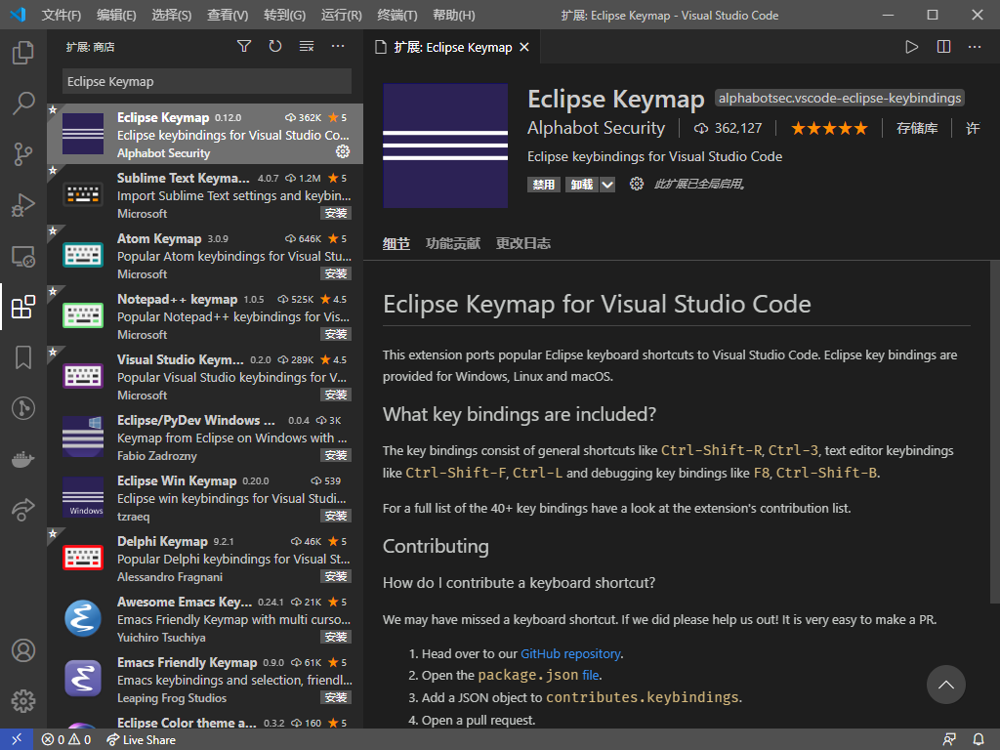

第一节：jeecg-vue环境的搭建
这里我们使用vscode作为演示
准备工作
安装插件
安装Vetur
支持Vue
点击安装即可
安装Ant Design Vue helper
支持ant design vue提示
导入vscode
点击 文件->打开文件夹

选择已经下载好的jeecg-vue项目
打开后

初始化安装
打开NPM 脚本
再点击NPM 脚本,找到里面的pre，点击运行
初始化安装（使用cmd）
或者使用cmd命令进行安装, 这种方法和上面的方法任选其一
使用 Ctrl+` 打开终端
如果打开的是power shell,可以更改为cmd(power shell与cmd有些语法上的不同，建议使用cmd)
选择cmd.exe，关闭窗口再次打开即可

再>后面输入init 1或者是npm run pre 2，这两个任选其一
1. 一个cmd脚本，运行即可安装yarn 并使用yarn初始化安装（使用本地的服务器，速度较快，仅支持cmd推荐使用） ↩
2. 用npm执行package.json中的pre脚本，jeecg-vue自带的 ↩
启动
使用NPM 脚本启动
点击serve的三角号启动

如下显示，即为启动成功
点击垃圾桶即可停止
使用cmd启动
使用 Ctrl+` 打开终端
输入 run或yarn serve或npm run serve启动服务

推荐安装插件
Eclipse Keymap 切换为ecliplse快捷键,也可以更改为其他熟悉的快捷键

Git History 点击任意一行查看git历史

Path Intellisense 地址提示

Guides 显示辅助线

Color Highilght 显示css颜色

Bracket Pair Colorizer 彩色括号，成对的一个颜色

Auto Rename Tag 自动补全html/xml标签